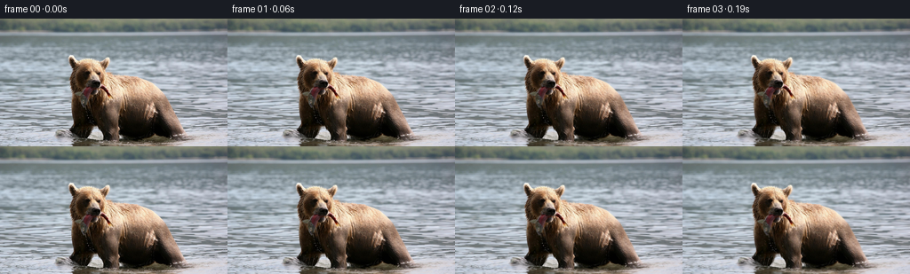
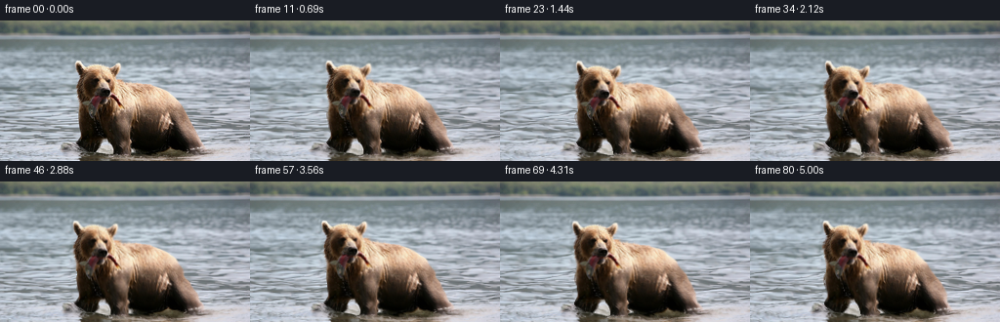

CODING AGENTS AS PIXEL WORLD MODELS
traex/GPT-6-Astra · 0872_s3
点击播放 · 原生 RGB 像素
逐轮保存的候选
回放视频、检查图与代码变化。
每份候选均可单独播放。实际图片检查记录在下方工具轨迹中。
候选 01播放与检查图
点击播放 · 原生 RGB 像素


展开代码变化
--- 上一保存版本
+++ 本次保存版本
@@ -0,0 +1,148 @@
+"""Animate the supplied photograph using hand-authored smooth image motion.
+No learned models or external visual sources are used.
+"""
+from pathlib import Path
+import numpy as np
+from PIL import Image, ImageDraw, ImageFilter
+import cv2
+from scipy.interpolate import CubicSpline
+from scipy.ndimage import gaussian_filter, distance_transform_edt
+import artifact_io
+
+ROOT=Path(__file__).resolve().parent
+W,H=256,144
+Y,X=np.mgrid[:H,:W].astype(np.float32)
+
+def smooth(a,b,x):
+ z=np.clip((x-a)/(b-a),0,1)
+ return z*z*(3-2*z)
+
+def polygon(points, blur=0):
+ s=4
+ im=Image.new('L',(W*s,H*s))
+ ImageDraw.Draw(im).polygon([(round(x*s),round(y*s)) for x,y in points],fill=255)
+ im=im.resize((W,H),Image.Resampling.LANCZOS)
+ if blur: im=im.filter(ImageFilter.GaussianBlur(blur))
+ return np.asarray(im).astype(np.float32)/255
+
+# The photograph's silhouette; this is used only to give the motion of the
+# animal a continuous falloff into the water, not to replace any image content.
+outline=[(78,42),(80,41),(84,44),(87,48),(94,46),(103,45),(112,47),
+ (119,44),(122,44),(123,47),(121,53),(119,59),(124,62),(133,65),
+ (148,66),(159,70),(171,79),(180,90),(189,105),(199,120),(207,130),
+ (209,134),(201,136),(189,135),(177,131),(171,132),(163,135),
+ (150,136),(141,134),(134,132),(133,137),(128,139),(117,138),
+ (115,134),(112,126),(108,121),(104,123),(100,131),(97,135),
+ (93,136),(87,133),(80,129),(77,125),(79,121),(81,116),
+ (81,107),(81,96),(79,85),(78,77),(79,67),(82,57),(79,51),(78,47)]
+sil=polygon(outline)
+inside=sil>0.45
+dout=distance_transform_edt(~inside)
+# A smooth exterior field prevents cut-out edges or invented disocclusions.
+influence=np.exp(-(dout/7.0)**2).astype(np.float32)
+water=1-gaussian_filter(sil,0.6)
+head=(1-smooth(85,112,Y))*(1-smooth(119,145,X))
+legfront=np.exp(-((X-123)/11.0)**4)*smooth(90,132,Y)
+legfar=np.exp(-((X-88)/9.0)**4)*smooth(96,130,Y)
+hind=np.exp(-((X-192)/13.0)**4)*smooth(105,134,Y)
+fish=np.exp(-((X-96)/8.0)**4)*smooth(79,99,Y)*(1-smooth(101,108,Y))
+fishright=np.exp(-((X-119)/7.0)**4)*smooth(78,89,Y)*(1-smooth(91,97,Y))
+
+knots=[0,.8,1.65,2.55,3.5,4.35,5.0625]
+def curve(vals):
+ return CubicSpline(knots, vals,bc_type=((1,0),(1,0)))
+bx=curve([0,-.15,-.7,-1.6,-2.25,-2.6,-3.0])
+by=curve([0,-.15,.3,-.35,-.7,-.15,-.35])
+ha=curve([0,1.2,3.4,2.2,-2.0,-1.0,.5])
+hx=curve([0,-.3,-1.3,-1.6,-.4,.0,-.25])
+hy=curve([0,.65,1.75,1.05,-1.45,-.75,-.25])
+
+def pulse(t,a,b):
+ if not a<t<b: return 0.
+ return np.sin(np.pi*(t-a)/(b-a))**2
+
+def displacement(t):
+ # A body-weight shift, a small breath, and two gently alternating foot lifts.
+ breath=.004*np.sin(2*np.pi*t/3.1)
+ dx=np.full_like(X,float(bx(t)))
+ dy=np.full_like(Y,float(by(t)))
+ torso=np.exp(-((X-145)/41)**4-((Y-97)/36)**4)
+ dx += breath*(X-127)*torso
+ dy += breath*.55*(Y-128)*torso
+ theta=float(ha(t))*np.pi/180
+ px,py=X-107,Y-83
+ dx += head*((np.cos(theta)-1)*px-np.sin(theta)*py+float(hx(t)))
+ dy += head*(np.sin(theta)*px+(np.cos(theta)-1)*py+float(hy(t)))
+ # Forepaw comes off the river bed and is placed a little farther forward.
+ p=pulse(t,1.05,2.75)
+ dx += legfront*(-1.3*p-1.25*smooth(1.4,2.65,t))
+ dy += legfront*(-2.55*p)
+ p2=pulse(t,3.15,4.85)
+ dx += legfar*(-1.35*p2-.65*smooth(3.7,4.85,t))
+ dy += legfar*(-1.6*p2)
+ dx += hind*(.55*p-.5*p2)
+ dy += hind*(-.45*p2)
+ # The hanging fish swings from its fixed grip in the jaws.
+ swing=(.65*np.sin(2*np.pi*t/1.7)+.35*np.sin(2*np.pi*t/2.8))
+ dx += fish*swing
+ dy += fish*(.18*np.sin(2*np.pi*t/1.4))
+ dy += fishright*.42*np.sin(2*np.pi*t/1.7)
+ dx *= influence
+ dy *= influence
+ # Traveling surface waves. Their displacement is exactly zero at time zero.
+ depth=smooth(16,92,Y)
+ active=water*depth
+ a=.092*X+.33*Y
+ b=.155*Y-.032*X
+ c=.19*X-.40*Y
+ wx=1.2*(np.sin(b-1.7*t)-np.sin(b))+.45*(np.sin(a-2.2*t)-np.sin(a))
+ wy=.49*(np.sin(a-2.0*t)-np.sin(a))+.26*(np.sin(c-2.75*t)-np.sin(c))
+ wx+=.4*(np.sin(.51*Y+.014*X-1.2*t)-np.sin(.51*Y+.014*X))
+ # A low elliptical wake is coupled to the submerged paws.
+ for cx,cy,strength in [(122,137,.28),(88,131,.2),(195,135,.19)]:
+ r=np.sqrt(((X-cx)*.58)**2+((Y-cy)*1.9)**2+1)
+ env=np.exp(-r/23)*smooth(2,8,r)
+ phase=r*.64
+ q=(np.sin(phase-4.0*t)-np.sin(phase))*env
+ wy += strength*q
+ wx += strength*.5*q*(X-cx)/(r+1)
+ dx += wx*active
+ dy += wy*active
+ return dx.astype(np.float32),dy.astype(np.float32)
+
+def remap(a,x,y):
+ return cv2.remap(a,x.astype(np.float32),y.astype(np.float32),cv2.INTER_LINEAR,borderMode=cv2.BORDER_REFLECT_101)
+
+def frame(t,source):
+ dx,dy=displacement(t)
+ sx=X-dx;sy=Y-dy
+ # Invert the continuous forward field rather than simply negating motion.
+ for _ in range(5):
+ sx=X-remap(dx,sx,sy)
+ sy=Y-remap(dy,sx,sy)
+ out=remap(source,sx,sy).astype(np.float32)
+ wet=remap(water,sx,sy)*smooth(19,88,Y)
+ # Tiny changes in reflected brightness ride the same ripples.
+ phase=.09*X+.42*Y
+ light=(np.sin(phase-2.0*t)-np.sin(phase))*.95
+ light+=(np.sin(.14*X-.64*Y-3.1*t)-np.sin(.14*X-.64*Y))*.42
+ out += (wet*light)[...,None]*np.array([.87,.97,1.03],np.float32)
+ # A few small water drops leaving the fish, falling in front of dark fur.
+ # They are subpixel highlights, not a synthetic splash overlay.
+ for start,xoff in [(1.04,-.3),(1.23,.9),(3.26,.1),(3.48,-.8),(4.4,.3)]:
+ age=t-start
+ if 0<age<.52:
+ xx=96+float(bx(start))+float(hx(start))+xoff+age*.8
+ yy=100+float(by(start))+float(hy(start))+8*age+74*age*age
+ opacity=np.sin(np.pi*min(age/.52,1))*.36
+ drop=np.exp(-((X-xx)/.38)**2-((Y-yy)/(.48+age*.65))**2)*opacity
+ out=out*(1-drop[...,None])+np.array([178,184,164])*drop[...,None]
+ return np.clip(np.rint(out),0,255).astype(np.uint8)
+
+def main():
+ source=np.array(Image.open(ROOT/'first_frame.png').convert('RGB'))
+ frames=np.stack([source if i==0 else frame(i/16,source) for i in range(81)])
+ assert np.array_equal(frames[0],source)
+ artifact_io.save(frames,ROOT)
+
+if __name__=='__main__':main()
可观测工具轨迹
实际执行的命令与返回图片。
命令 1exit 0
/bin/bash -lc "ls -la && cat GENERATION_RULES.md && printf '\\n---PROMPT---\\n' && cat prompt.txt"
命令 2exit 0
/bin/bash -lc 'cat task_spec.json && cat artifact_io.py'
命令 3exit 0
/bin/bash -lc "python - <<'PY'
from PIL import Image
im=Image.open('first_frame.png')
im.resize((1024,576)).save('.tmp/enlarged.png')
PY"命令 4exit 0
/bin/bash -lc "python - <<'PY'
import numpy, PIL, scipy
print('scipy',scipy.__version__)
try:
import cv2
print('cv2',cv2.__version__)
except Exception as e: print(e)
PY"命令 5exit 0
/bin/bash -lc "cat > generate.py <<'PY'
\"\"\"Animate the supplied photograph using hand-authored smooth image motion.
No learned models or external visual sources are used.
\"\"\"
from pathlib import Path
import numpy as np
from PIL import Image, ImageDraw, ImageFilter
import cv2
from scipy.interpolate import CubicSpline
from scipy.ndimage import gaussian_filter, distance_transform_edt
import artifact_io
ROOT=Path(__file__).resolve().parent
W,H=256,144
Y,X=np.mgrid[:H,:W].astype(np.float32)
def smooth(a,b,x):
z=np.clip((x-a)/(b-a),0,1)
return z*z*(3-2*z)
def polygon(points, blur=0):
s=4
im=Image.new('L',(W*s,H*s))
ImageDraw.Draw(im).polygon([(round(x*s),round(y*s)) for x,y in points],fill=255)
im=im.resize((W,H),Image.Resampling.LANCZOS)
if blur: im=im.filter(ImageFilter.GaussianBlur(blur))
return np.asarray(im).astype(np.float32)/255
# The photograph's silhouette; this is used only to give the motion of the
# animal a continuous falloff into the water, not to replace any image content.
outline=[(78,42),(80,41),(84,44),(87,48),(94,46),(103,45),(112,47),
(119,44),(122,44),(123,47),(121,53),(119,59),(124,62),(133,65),
(148,66),(159,70),(171,79),(180,90),(189,105),(199,120),(207,130),
(209,134),(201,136),(189,135),(177,131),(171,132),(163,135),
(150,136),(141,134),(134,132),(133,137),(128,139),(117,138),
(115,134),(112,126),(108,121),(104,123),(100,131),(97,135),
(93,136),(87,133),(80,129),(77,125),(79,121),(81,116),
(81,107),(81,96),(79,85),(78,77),(79,67),(82,57),(79,51),(78,47)]
sil=polygon(outline)
inside=sil>0.45
dout=distance_transform_edt(~inside)
# A smooth exterior field prevents cut-out edges or invented disocclusions.
influence=np.exp(-(dout/7.0)**2).astype(np.float32)
water=1-gaussian_filter(sil,0.6)
head=(1-smooth(85,112,Y))*(1-smooth(119,145,X))
legfront=np.exp(-((X-123)/11.0)**4)*smooth(90,132,Y)
legfar=np.exp(-((X-88)/9.0)**4)*smooth(96,130,Y)
hind=np.exp(-((X-192)/13.0)**4)*smooth(105,134,Y)
fish=np.exp(-((X-96)/8.0)**4)*smooth(79,99,Y)*(1-smooth(101,108,Y))
fishright=np.exp(-((X-119)/7.0)**4)*smooth(78,89,Y)*(1-smooth(91,97,Y))
knots=[0,.8,1.65,2.55,3.5,4.35,5.0625]
def curve(vals):
return CubicSpline(knots, vals,bc_type=((1,0),(1,0)))
bx=curve([0,-.15,-.7,-1.6,-2.25,-2.6,-3.0])
by=curve([0,-.15,.3,-.35,-.7,-.15,-.35])
ha=curve([0,1.2,3.4,2.2,-2.0,-1.0,.5])
hx=curve([0,-.3,-1.3,-1.6,-.4,.0,-.25])
hy=curve([0,.65,1.75,1.05,-1.45,-.75,-.25])
def pulse(t,a,b):
if not a<t<b: return 0.
return np.sin(np.pi*(t-a)/(b-a))**2
def displacement(t):
# A body-weight shift, a small breath, and two gently alternating foot lifts.
breath=.004*np.sin(2*np.pi*t/3.1)
dx=np.full_like(X,float(bx(t)))
dy=np.full_like(Y,float(by(t)))
torso=np.exp(-((X-145)/41)**4-((Y-97)/36)**4)
dx += breath*(X-127)*torso
dy += breath*.55*(Y-128)*torso
theta=float(ha(t))*np.pi/180
px,py=X-107,Y-83
dx += head*((np.cos(theta)-1)*px-np.sin(theta)*py+float(hx(t)))
dy += head*(np.sin(theta)*px+(np.cos(theta)-1)*py+float(hy(t)))
# Forepaw comes off the river bed and is placed a little farther forward.
p=pulse(t,1.05,2.75)
dx += legfront*(-1.3*p-1.25*smooth(1.4,2.65,t))
dy += legfront*(-2.55*p)
p2=pulse(t,3.15,4.85)
dx += legfar*(-1.35*p2-.65*smooth(3.7,4.85,t))
dy += legfar*(-1.6*p2)
dx += hind*(.55*p-.5*p2)
dy += hind*(-.45*p2)
# The hanging fish swings from its fixed grip in the jaws.
swing=(.65*np.sin(2*np.pi*t/1.7)+.35*np.sin(2*np.pi*t/2.8))
dx += fish*swing
dy += fish*(.18*np.sin(2*np.pi*t/1.4))
dy += fishright*.42*np.sin(2*np.pi*t/1.7)
dx *= influence
dy *= influence
# Traveling surface waves. Their displacement is exactly zero at time zero.
depth=smooth(16,92,Y)
active=water*depth
a=.092*X+.33*Y
b=.155*Y-.032*X
c=.19*X-.40*Y
wx=1.2*(np.sin(b-1.7*t)-np.sin(b))+.45*(np.sin(a-2.2*t)-np.sin(a))
wy=.49*(np.sin(a-2.0*t)-np.sin(a))+.26*(np.sin(c-2.75*t)-np.sin(c))
wx+=.4*(np.sin(.51*Y+.014*X-1.2*t)-np.sin(.51*Y+.014*X))
# A low elliptical wake is coupled to the submerged paws.
for cx,cy,strength in [(122,137,.28),(88,131,.2),(195,135,.19)]:
r=np.sqrt(((X-cx)*.58)**2+((Y-cy)*1.9)**2+1)
env=np.exp(-r/23)*smooth(2,8,r)
phase=r*.64
q=(np.sin(phase-4.0*t)-np.sin(phase))*env
wy += strength*q
wx += strength*.5*q*(X-cx)/(r+1)
dx += wx*active
dy += wy*active
return dx.astype(np.float32),dy.astype(np.float32)
def remap(a,x,y):
return cv2.remap(a,x.astype(np.float32),y.astype(np.float32),cv2.INTER_LINEAR,borderMode=cv2.BORDER_REFLECT_101)
def frame(t,source):
dx,dy=displacement(t)
sx=X-dx;sy=Y-dy
# Invert the continuous forward field rather than simply negating motion.
for _ in range(5):
sx=X-remap(dx,sx,sy)
sy=Y-remap(dy,sx,sy)
out=remap(source,sx,sy).astype(np.float32)
wet=remap(water,sx,sy)*smooth(19,88,Y)
# Tiny changes in reflected brightness ride the same ripples.
phase=.09*X+.42*Y
light=(np.sin(phase-2.0*t)-np.sin(phase))*.95
light+=(np.sin(.14*X-.64*Y-3.1*t)-np.sin(.14*X-.64*Y))*.42
out += (wet*light)[...,None]*np.array([.87,.97,1.03],np.float32)
# A few small water drops leaving the fish, falling in front of dark fur.
# They are subpixel highlights, not a synthetic splash overlay.
for start,xoff in [(1.04,-.3),(1.23,.9),(3.26,.1),(3.48,-.8),(4.4,.3)]:
age=t-start
if 0<age<.52:
xx=96+float(bx(start))+float(hx(start))+xoff+age*.8
yy=100+float(by(start))+float(hy(start))+8*age+74*age*age
opacity=np.sin(np.pi*min(age/.52,1))*.36
drop=np.exp(-((X-xx)/.38)**2-((Y-yy)/(.48+age*.65))**2)*opacity
out=out*(1-drop[...,None])+np.array([178,184,164])*drop[...,None]
return np.clip(np.rint(out),0,255).astype(np.uint8)
def main():
source=np.array(Image.open(ROOT/'first_frame.png').convert('RGB'))
frames=np.stack([source if i==0 else frame(i/16,source) for i in range(81)])
assert np.array_equal(frames[0],source)
artifact_io.save(frames,ROOT)
if __name__=='__main__':main()
PY
python generate.py"命令 6exit 0
/bin/bash -lc "command -v ffmpeg || true; python - <<'PY'
import numpy as np
from PIL import Image
p=np.load('pixels.npz')['pixels']
a=np.array(Image.open('first_frame.png').convert('RGB'))
rgb=np.stack([(p>>16)&255,(p>>8)&255,p&255],axis=-1).astype(np.uint8)
print('Frames:',rgb.shape,'First frame exact:',np.array_equal(rgb[:,:,0,:],a))
print('Mean RGB change, adjacent:',np.abs(rgb[:,:,1:].astype(float)-rgb[:,:,:-1].astype(float)).mean())
PY"视觉工具实际返回图片 1

视觉工具实际返回图片 2

保存候选 1 份；完成命令 6 次；可验证图片返回 2 张。原始 API 响应与完整日志保留在本地。